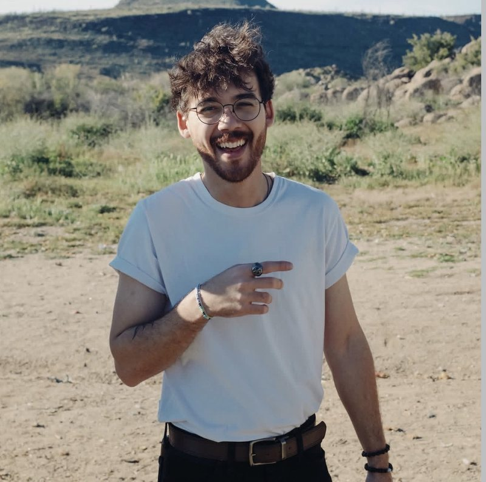

Reel 04 · About · Austin, TexasFilmmaker · Producer · Photographer
About

JP Silva is a filmmaker, producer and photographer based in Austin, Texas.
Born in Bauru, São Paulo, Brazil, JP moved to the United States at thirteen. He started out shooting live shows in Phoenix, and the cameras followed the bands: music videos, tours, the long days and late nights in between.
Today he makes music videos for artists, films for brands and venues, and photographs that sit somewhere between the two. He has been based in Austin since 2025.
In his words
I’ve always been more interested in honest shots than “perfect” ones. As a filmmaker, I find myself drawn to the quiet pauses and the unscripted moments that people don’t usually plan for, but always feel.
My process is built on observation. I show up to listen and understand the room before I ever hit record. Visually, I lean toward a moody, cinematic aesthetic, utilizing grain and raw textures to create films that feel more like a memory than a broadcast.
Facts
On the wall
Photography

Interview · Voyage Phoenix
Rising Stars: Meet JP Silva of Austin, TX
Read the interview on Voyage Phoenix (opens in a new tab)